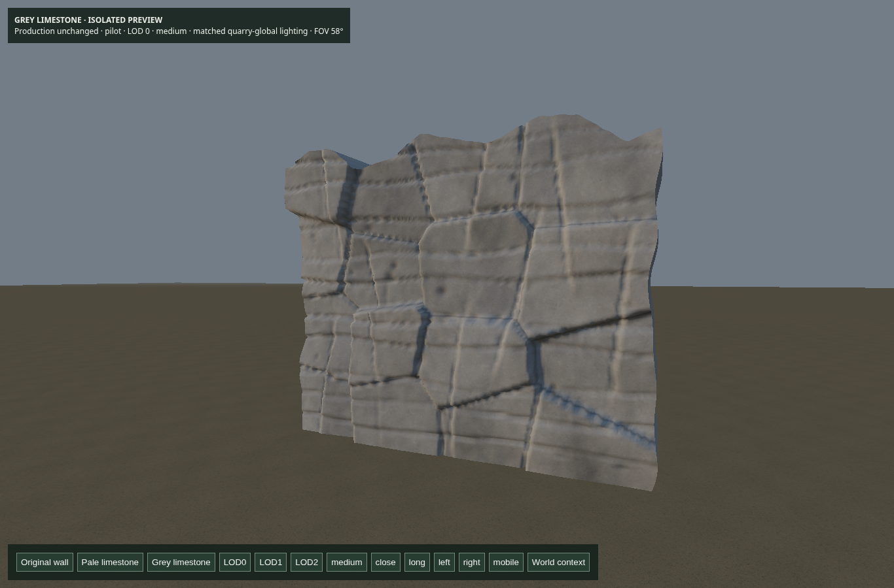

Actual production-browser captures. Opt-in only; default quarry unchanged. Original PNG resolution preserved. Portrait views are browser emulation, not physical mobile profiling.
Report · Matched-camera metadata · Checks

Fresh actual-browser capture of the unchanged original pilot at LOD0.
SwiftShader software-renderer footage; not a generated cinematic.